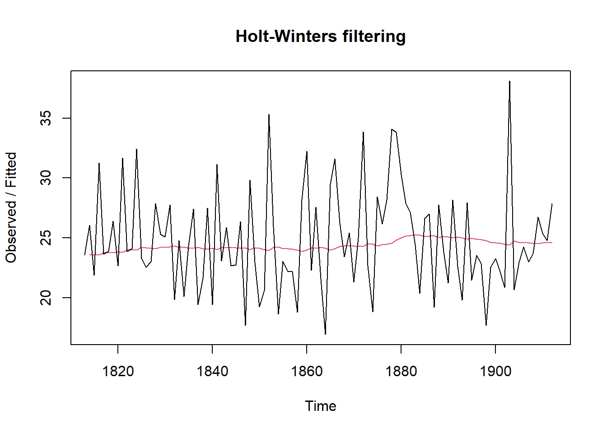

9 Time series Analysis using R
We will be using the following data to demonstrate Time series analysis in R. Download the data and save in your system for practice.
-kings.csv contains data on the age of death of successive kings of England, starting with William the Conqueror.
-births.csv is a data set of the number of births per month in New York city, from January 1946 to December 1959 (originally collected by Newton).
-souvenir.csv contains monthly sales for a souvenir shop at a beach resort town in Queensland, Australia, for January 1987-December 1993.
-rain.csv data contains total annual rainfall in inches for London, from 1813-1912.
9.1 Getting Started
After importing the time series data kings.csv into R in the name kings, the next step is to save it as a time series object using R’s ts() function. For example, to store the data from your imported CSV file in the variable ‘kings’ as a time series, you would write:
Import kings.csv and call it as kings in R. (We assume the reader knows the basics of importing csv in R)
kingsts <- ts(kings)
kingsts## Time Series:
## Start = 1
## End = 42
## Frequency = 1
## [1] 60 43 67 50 56 42 50 65 68 43 65 34 47 34 49 41 13 35 53 56 16 43 69 59 48
## [26] 59 86 55 68 51 33 49 67 77 81 67 71 81 68 70 77 56If your time series data is collected at intervals shorter than a year, like monthly or quarterly, you can use the frequency parameter in the ts() function. For monthly data, set frequency=12, and for quarterly data, set frequency=4. You can also indicate the starting year and interval with the start parameter. For instance, if the data begins in the second quarter of 1986, you’d use start=c(1986, 2).
Download birth.csv file form first section which contains number of births per month in New York city, from January 1946 to December 1959. So it can be converted to ts object in R as follows. It is a monthly data so frequency 12.
## Jan Feb Mar Apr May Jun Jul Aug Sep Oct
## 1946 26.663 23.598 26.931 24.740 25.806 24.364 24.477 23.901 23.175 23.227
## 1947 21.439 21.089 23.709 21.669 21.752 20.761 23.479 23.824 23.105 23.110
## 1948 21.937 20.035 23.590 21.672 22.222 22.123 23.950 23.504 22.238 23.142
## 1949 21.548 20.000 22.424 20.615 21.761 22.874 24.104 23.748 23.262 22.907
## 1950 22.604 20.894 24.677 23.673 25.320 23.583 24.671 24.454 24.122 24.252
## 1951 23.287 23.049 25.076 24.037 24.430 24.667 26.451 25.618 25.014 25.110
## 1952 23.798 22.270 24.775 22.646 23.988 24.737 26.276 25.816 25.210 25.199
## 1953 24.364 22.644 25.565 24.062 25.431 24.635 27.009 26.606 26.268 26.462
## 1954 24.657 23.304 26.982 26.199 27.210 26.122 26.706 26.878 26.152 26.379
## 1955 24.990 24.239 26.721 23.475 24.767 26.219 28.361 28.599 27.914 27.784
## 1956 26.217 24.218 27.914 26.975 28.527 27.139 28.982 28.169 28.056 29.136
## 1957 26.589 24.848 27.543 26.896 28.878 27.390 28.065 28.141 29.048 28.484
## 1958 27.132 24.924 28.963 26.589 27.931 28.009 29.229 28.759 28.405 27.945
## 1959 26.076 25.286 27.660 25.951 26.398 25.565 28.865 30.000 29.261 29.012
## Nov Dec
## 1946 21.672 21.870
## 1947 21.759 22.073
## 1948 21.059 21.573
## 1949 21.519 22.025
## 1950 22.084 22.991
## 1951 22.964 23.981
## 1952 23.162 24.707
## 1953 25.246 25.180
## 1954 24.712 25.688
## 1955 25.693 26.881
## 1956 26.291 26.987
## 1957 26.634 27.735
## 1958 25.912 26.619
## 1959 26.992 27.897similarly for souvenir.csv
## Jan Feb Mar Apr May Jun Jul
## 1987 1664.81 2397.53 2840.71 3547.29 3752.96 3714.74 4349.61
## 1988 2499.81 5198.24 7225.14 4806.03 5900.88 4951.34 6179.12
## 1989 4717.02 5702.63 9957.58 5304.78 6492.43 6630.80 7349.62
## 1990 5921.10 5814.58 12421.25 6369.77 7609.12 7224.75 8121.22
## 1991 4826.64 6470.23 9638.77 8821.17 8722.37 10209.48 11276.55
## 1992 7615.03 9849.69 14558.40 11587.33 9332.56 13082.09 16732.78
## 1993 10243.24 11266.88 21826.84 17357.33 15997.79 18601.53 26155.15
## Aug Sep Oct Nov Dec
## 1987 3566.34 5021.82 6423.48 7600.60 19756.21
## 1988 4752.15 5496.43 5835.10 12600.08 28541.72
## 1989 8176.62 8573.17 9690.50 15151.84 34061.01
## 1990 7979.25 8093.06 8476.70 17914.66 30114.41
## 1991 12552.22 11637.39 13606.89 21822.11 45060.69
## 1992 19888.61 23933.38 25391.35 36024.80 80721.71
## 1993 28586.52 30505.41 30821.33 46634.38 104660.679.2 Plotting time series data
After importing a time series into R, the next step is often to create a plot of the data. You can do this using the plot.ts() function. For example, to plot the time series of the ages at death of 42 successive English kings, you would write:
plot.ts(kingsts)
plot.ts(birthsts)
plot.ts(souvenirts)9.3 Decomposing Time Series
Decomposing a time series involves breaking it down into distinct elements to better understand its underlying patterns. Typically, this process separates the data into three key components:
Trend Component: This reflects the long-term direction of the data, showing whether there is an overall upward or downward movement over time. It helps to identify the general course of the series without short-term fluctuations.
Seasonal Component: If the data exhibits regular patterns at consistent intervals, this component captures those repeating cycles. For example, monthly sales data may show higher sales during the holiday season every year. This helps to isolate predictable fluctuations from the rest of the data.
Irregular (or Residual) Component: After removing the trend and seasonal components, what’s left is the irregular component, which represents random noise or short-term variations that cannot be attributed to a clear pattern. These fluctuations are unpredictable and often occur due to unforeseen events or natural variability.
By decomposing a time series, you can better analyze and model the individual components, making it easier to forecast future values or understand the underlying behaviors of the data.
9.3.1 Decomposing Non-Seasonal Data
A non-seasonal time series typically consists of a trend component and an irregular component. Decomposing this type of time series involves estimating these two components separately.
To estimate the trend component of a non-seasonal time series that can be modeled using an additive approach, a common technique is to apply a smoothing method. One effective method for this is the simple moving average (SMA), which helps to smooth out short-term fluctuations and highlight longer-term trends.
In R, you can use the SMA() function from the “TTR” package to calculate the simple moving average of your time series data. Here’s how to do it:
- Install the “TTR” Package: If you haven’t already installed the “TTR” package, you can do so by running the following command in R:
install.packages("TTR")- Load the “TTR” Package: Once the package is installed, you can load it into your R session with the following command:
After loading the package, you can then use the SMA() function to compute the simple moving average and obtain the trend component of your non-seasonal time series. This process allows you to better understand the underlying trend in the data by reducing noise from irregular fluctuations.
Finding the optimal level of smoothing often requires some trial and error to determine the best order that balances noise reduction while preserving the essential patterns in the data.
For instance, you can experiment with a simple moving average of order 8 to see if this provides a clearer representation of the trend. Here’s how you can do that in R:
Using a higher order like 8 should help smooth the data further, potentially reducing the random fluctuations and allowing for a clearer view of the underlying trend. This iterative approach can lead to a more accurate understanding of the time series behavior.
9.3.2 Decomposing Seasonal Data
A seasonal time series is characterized by three components: a trend component, a seasonal component, and an irregular component. Decomposing this time series involves separating it into these three distinct elements to better understand its structure.
To estimate the trend and seasonal components of a seasonal time series that can be modeled using an additive approach, you can utilize the decompose() function in R. This function effectively breaks down the time series into its constituent components, providing estimates for each.
Here’s how to use the decompose() function:
-
Apply the
decompose()Function: You can call this function on your seasonal time series object. For example:
birthstscomp <- decompose(birthsts)-
Accessing Components: The
decompose()function returns a list object containing the estimates of the seasonal, trend, and irregular components. You can access these components using the following names:-
birthstscomp$seasonal: This element holds the estimated seasonal component. -
birthstscomp$trend: This contains the estimated trend component. -
birthstscomp$random: This represents the irregular component.
-
By decomposing the time series, you can analyze each component separately, which can enhance your understanding of the data and improve forecasting accuracy.
The estimated seasonal factors for the months from January to December indicate consistent patterns across each year. Notably, July has the highest seasonal factor at approximately 1.46, suggesting a peak in births during that month. Conversely, February has the lowest seasonal factor at around -2.08, indicating a trough in births during this time of year.
To visualize these components—trend, seasonal, and irregular—you can use the plot() function in R. Here’s how to do it:
- Plot the Components: After decomposing your time series, you can create plots for each component as follows:
plot(birthstscomp)
This command will generate a series of plots showing the estimated trend, seasonal, and irregular components of your time series, allowing you to analyze and interpret the behavior of each component visually.
The plot presented above displays the original time series at the top, followed by the estimated trend component, the estimated seasonal component, and finally, the estimated irregular component at the bottom. The trend component reveals a slight decline from approximately 24 in 1947 to around 22 in 1948. After this dip, there is a consistent upward trend, reaching about 27 by 1959.
9.4 Seasonally Adjusting a Time Series
Seasonal adjustment of a time series involves removing the seasonal effects to reveal the underlying trends and irregularities more clearly. If the time series can be described using an additive model, this process is relatively straightforward. By estimating the seasonal component and subtracting it from the original data, you can remove the seasonal variation and obtain a seasonally adjusted time series.
Here’s how to achieve this in R using the decompose() function:
-
Estimate the Seasonal Component: First, decompose the time series to estimate its seasonal component using the
decompose()function. This function calculates the seasonal, trend, and irregular components of the data.
birthstscomp<- decompose(birthsts)- Subtract the Seasonal Component: Once you have the seasonal component, subtract it from the original time series to remove the seasonality. This gives you a seasonally adjusted series:
birthstsadj<- birthsts - birthstscomp$seasonal- Interpretation: The result is a time series without the repetitive seasonal fluctuations, making it easier to focus on trends and irregular components. For example, if you’re analyzing the number of births per month in New York City, this adjustment will help you see whether the overall trend in births is increasing or decreasing, without being influenced by regular seasonal peaks and troughs.
By seasonally adjusting the data, analysts can make more accurate comparisons and forecasts without seasonal noise. This process is crucial in understanding the true underlying behavior of time series data, especially when making decisions based on long-term trends.
We can then plot the seasonally adjusted time series using the plot() function
plot(birthstsadj)9.5 Forecasts Using Exponential Smoothing
Exponential smoothing, first introduced by Robert Goodell Brown in 1956 and later refined by Charles C. Holt in 1957, is a widely effective technique for smoothing time-series data. Unlike methods like the simple moving average, which apply equal weights to past data points, exponential smoothing uses an exponentially decreasing weight function. This approach assigns more significance to recent observations and less to older ones. A key parameter in this method is the smoothing constant, which determines the rate of decay for the weights. Due to its straightforward nature and ease of application, exponential smoothing is frequently employed in time-series analysis, often incorporating factors like seasonality based on user-defined assumptions.
Exponential smoothing is generally used to make short term forecasts, but longer-term forecasts using this technique can be quite unreliable.
When the smoothing factor (α) is larger, the level of smoothing decreases. An α value close to 1 results in less smoothing, giving more weight to recent changes in the data. Conversely, an α value closer to 0 leads to greater smoothing, making the model less responsive to recent fluctuations.
There is no universally accepted method for selecting the ideal α value. In some cases, the statistician’s expertise is used to choose an appropriate factor. Alternatively, statistical methods can be applied to optimize α, such as using the least squares method to find the value that minimizes the sum of errors in the model.
9.5.1 Types of Exponential Smoothing
- Simple Exponential Smoothing:
- Best suited for data without trend or seasonality.
- The forecast for the next period is a weighted average of past observations, where weights decrease exponentially for older observations.
- The smoothing parameter (\(\alpha\)) controls the degree of weighting; values range from 0 to 1. A higher \(\alpha\) gives more weight to recent observations.
Formula: \[ F_{t+1} = \alpha Y_t + (1 - \alpha) F_t \] where \(F_{t+1}\) is the forecast for the next period, \(Y_t\) is the actual observation at time \(t\), and \(F_t\) is the forecast for time \(t\).
- Holt’s Linear Exponential Smoothing:
- Extends simple exponential smoothing to account for trends in the data.
- It uses two smoothing parameters: one for the level (\(\alpha\)) and one for the trend (\(\beta\)).
- This method allows for forecasts that can accommodate linear trends.
Formulas: - Level: \[ l_t = \alpha Y_t + (1 - \alpha)(l_{t-1} + b_{t-1}) \] - Trend: \[ b_t = \beta (l_t - l_{t-1}) + (1 - \beta)b_{t-1} \] - Forecast: \[ F_{t+m} = l_t + mb_t \]
- Holt-Winters Exponential Smoothing:
- An extension of Holt’s method that also incorporates seasonality.
- It uses three parameters: \(\alpha\) for the level, \(\beta\) for the trend, and \(\gamma\) for the seasonal component.
- There are two variants: additive (for seasonal effects that are roughly constant) and multiplicative (for seasonal effects that change with the level of the series).
Formulas: - Level: \[ l_t = \alpha (Y_t / s_{t-s}) + (1 - \alpha)(l_{t-1} + b_{t-1}) \] - Trend: \[ b_t = \beta (l_t - l_{t-1}) + (1 - \beta)b_{t-1} \] - Seasonal: \[ s_t = \gamma (Y_t / l_t) + (1 - \gamma)s_{t-s} \] - Forecast: \[ F_{t+m} = (l_t + mb_t)s_{t-m} \]
9.5.2 Advantages of Exponential Smoothing
- Simplicity: It is relatively easy to implement and understand.
- Flexibility: Different types can accommodate various data patterns (trends and seasonality).
- Adaptability: The method can quickly adjust to changes in the data patterns.
Exponential smoothing is a powerful technique for forecasting time series data. By applying weighted averages to past observations, it effectively captures trends and seasonal patterns, making it a valuable tool for analysts and decision-makers. The method’s adaptability and ease of use make it an essential part of any forecasting toolkit.
Consider the data rain.csv
In the above plot we can observe that the mean remains approximately constant at around 25 inches, and the random fluctuations appear to be relatively stable over time. Given this, it seems appropriate to apply an additive model for the time series. Consequently, we can generate forecasts using simple exponential smoothing.
In R, we can fit a simple exponential smoothing model using the HoltWinters() function. For simple exponential smoothing, we must set the parameters beta = FALSE and gamma = FALSE, as these parameters are utilized for Holt’s or Holt-Winters exponential smoothing.
The HoltWinters() function returns a list containing several key components. To forecast a time series, such as London’s annual rainfall, with simple exponential smoothing, we would use the following R code:
rainforecast <-HoltWinters(rainseries, beta = FALSE, gamma = FALSE)
rainforecast## Holt-Winters exponential smoothing without trend and without seasonal component.
##
## Call:
## HoltWinters(x = rainseries, beta = FALSE, gamma = FALSE)
##
## Smoothing parameters:
## alpha: 0.02412151
## beta : FALSE
## gamma: FALSE
##
## Coefficients:
## [,1]
## a 24.67819The HoltWinters() function estimates an alpha value of approximately 0.024, indicating that the forecasts consider both recent and past observations, though they slightly prioritize recent data. By default, the function generates forecasts for the same time range as the original time series—in this case, London’s rainfall data from 1813 to 1912. The forecast results are saved in a list variable like rainseriesforecasts, and the predicted values can be accessed through its fitted element.
rainforecast$fitted## Time Series:
## Start = 1814
## End = 1912
## Frequency = 1
## xhat level
## 1814 23.56000 23.56000
## 1815 23.62054 23.62054
## 1816 23.57808 23.57808
## 1817 23.76290 23.76290
## 1818 23.76017 23.76017
## 1819 23.76306 23.76306
## 1820 23.82691 23.82691
## 1821 23.79900 23.79900
## 1822 23.98935 23.98935
## 1823 23.98623 23.98623
## 1824 23.98921 23.98921
## 1825 24.19282 24.19282
## 1826 24.17032 24.17032
## 1827 24.13171 24.13171
## 1828 24.10442 24.10442
## 1829 24.19549 24.19549
## 1830 24.22261 24.22261
## 1831 24.24329 24.24329
## 1832 24.32812 24.32812
## 1833 24.21938 24.21938
## 1834 24.23290 24.23290
## 1835 24.13369 24.13369
## 1836 24.13867 24.13867
## 1837 24.21782 24.21782
## 1838 24.10257 24.10257
## 1839 24.04293 24.04293
## 1840 24.12608 24.12608
## 1841 24.01280 24.01280
## 1842 24.18448 24.18448
## 1843 24.15808 24.15808
## 1844 24.19889 24.19889
## 1845 24.16153 24.16153
## 1846 24.12748 24.12748
## 1847 24.18133 24.18133
## 1848 24.02499 24.02499
## 1849 24.16454 24.16454
## 1850 24.13476 24.13476
## 1851 24.01621 24.01621
## 1852 23.93453 23.93453
## 1853 24.20964 24.20964
## 1854 24.25018 24.25018
## 1855 24.11509 24.11509
## 1856 24.08964 24.08964
## 1857 24.04430 24.04430
## 1858 23.99933 23.99933
## 1859 23.87319 23.87319
## 1860 23.97780 23.97780
## 1861 24.17710 24.17710
## 1862 24.13110 24.13110
## 1863 24.21405 24.21405
## 1864 24.15075 24.15075
## 1865 23.97658 23.97658
## 1866 24.10933 24.10933
## 1867 24.29001 24.29001
## 1868 24.33729 24.33729
## 1869 24.31468 24.31468
## 1870 24.34134 24.34134
## 1871 24.26847 24.26847
## 1872 24.28659 24.28659
## 1873 24.51752 24.51752
## 1874 24.47295 24.47295
## 1875 24.33660 24.33660
## 1876 24.43558 24.43558
## 1877 24.47717 24.47717
## 1878 24.56625 24.56625
## 1879 24.79573 24.79573
## 1880 25.01341 25.01341
## 1881 25.14045 25.14045
## 1882 25.20750 25.20750
## 1883 25.25411 25.25411
## 1884 25.23351 25.23351
## 1885 25.11571 25.11571
## 1886 25.15248 25.15248
## 1887 25.19729 25.19729
## 1888 25.05286 25.05286
## 1889 25.11768 25.11768
## 1890 25.08710 25.08710
## 1891 24.99407 24.99407
## 1892 25.07019 25.07019
## 1893 25.01085 25.01085
## 1894 24.88515 24.88515
## 1895 24.95884 24.95884
## 1896 24.87469 24.87469
## 1897 24.84201 24.84201
## 1898 24.79420 24.79420
## 1899 24.62284 24.62284
## 1900 24.57259 24.57259
## 1901 24.54141 24.54141
## 1902 24.48421 24.48421
## 1903 24.39631 24.39631
## 1904 24.72686 24.72686
## 1905 24.62852 24.62852
## 1906 24.58852 24.58852
## 1907 24.58059 24.58059
## 1908 24.54271 24.54271
## 1909 24.52166 24.52166
## 1910 24.57541 24.57541
## 1911 24.59433 24.59433
## 1912 24.59905 24.59905We can plot the original time series against the forecasts
plot(rainforecast)
The plot displays the original time series in black, with the forecasts represented by a red line. The forecasted time series appears much smoother compared to the original data. To assess the accuracy of these forecasts, we can calculate the sum of squared errors (SSE) for the in-sample forecast errors, which refer to the forecast errors over the period covered by the original time series. This SSE value is stored in the SSE element of the rainforecast list.
rainforecast$SSE## [1] 1828.855In this case, the sum of squared errors (SSE) is 1828.855. In simple exponential smoothing, the initial value for the level is often set to the first value of the time series. For instance, in London’s rainfall data, the initial value is 23.56 inches for the year 1813. To specify this initial level value in the HoltWinters() function, you can use the l.start parameter. For example, to set the initial level to 23.56, you would use the following command:
rainforecast$SSE## [1] 1828.855